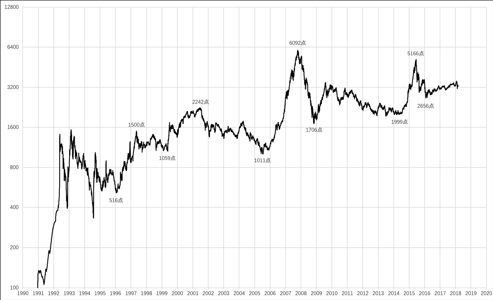
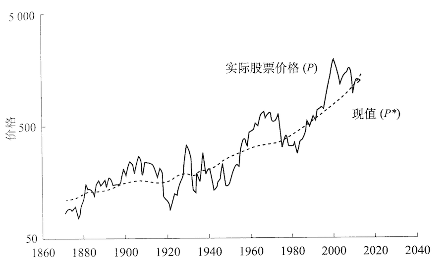

The following is the logarithmic scale chart of SSE Composite Index from 1990/12/19 to 2018/03/02, you can download the data from here.
The following is the chart of Standard & Poors Stock Price Indexes I copied from the book Irrational Exuberance written by Robert Shiller.
